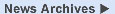

<!--News Section----------------------------------------------->  
        <TABLE WIDTH="100%" BGCOLOR="#888888" BORDER="0" CELLSPACING="0" CELLPADDING="1">
            <TR><TD>        
            <TABLE BGCOLOR="#fffee8" WIDTH="100%"  BORDER="0" CELLSPACING="0" CELLPADDING="0">
                <TR><TD>        
                <TABLE BGCOLOR="#D9E4F8" BACKGROUND="images/hr.gif" WIDTH="100%" BORDER=0>
                    <TR><TD>
                    <!--cheap trick to get background on row to be continuous-->
                    <TABLE CELLPADDING=0 CELLSPACING=0 WIDTH="100%">
                        <TR><TD ALIGN="left">
                          <FONT SIZE="4"><A NAME="TOC"></A><B>&nbsp; News</B></FONT></TD>
                        <TD ALIGN="right"><A HREF="goldenPath/newsarch.html"></A>
                    </TD></TR></TABLE>
                </TD></TR></TABLE>
                <TABLE BGCOLOR="#fffee8" WIDTH="100%" CELLPADDING=0>
                    <TR><TH HEIGHT=3></TH></TR>
                    <TR><TD WIDTH=10></TD>
                    <TD>
                    <P>
                    To receive announcements of new genome 
                    assembly releases, new software features, updates and 
                    training seminars by email, subscribe to the
                    <A HREF="http://www.soe.ucsc.edu/mailman/listinfo/genome-announce" 
                    TARGET=_blank>genome-announce</A> mailing list.</P>
		    <P>
		    <FONT FACE="courier" SIZE="3"><B>27 August 2008 - Zebra Finch Genome Browser Released</B></FONT><BR>
		    <P>
		    We've added the Jul. 2008 release of the zebra finch genome 
		    (<em>Taeniopygia guttata</em>) to our collection of 
		    vertebrate genome browsers. The v3.2.4 draft assembly
		    (UCSC version taeGut1) was produced by the Genome Sequencing
		    Center at the Washington University in St. Louis (WUSTL) 
		    School of Medicine in St. Louis, MO, USA. 
		    </P>
		    <P>
		    The zebra finch genome is the second bird genome to be
		    sequenced (following the chicken, <em>Gallus gallus</em>).
		    The DNA used for the shotgun sequencing and the BAC and
		    cosmid libraries was derived from a single male zebra finch.
		    The initial assembly was generated using PCAP with 
		    approximately 6X coverage. About 1.0 Gb of the 1.2-Gb 
		    genome has been ordered and oriented along 33 chromosomes 
		    and one linkage group. The chromosome names are based on
		    their homologous chromosomes in the chicken (<em>Gallus 
		    gallus</em>). For more assembly
		    details, as well as a cross reference table of 
		    zebra finch and chicken chromosome names, see the WUSTL 
		    <A HREF="http://genome.wustl.edu/pub/organism/Other_Vertebrates/Taeniopygia_guttata/assembly/Taeniopygia_guttata-3.2.4/ASSEMBLY"
		    TARGET=_blank>assembly notes</A>.</P>
		    <P>
		    Bulk downloads of the sequence and annotation data are 
		    available from the Genome Browser 
		    <A HREF="ftp://hgdownload.cse.ucsc.edu/goldenPath/taeGut1/">FTP server</A> 
		    or <A HREF="http://hgdownload.cse.ucsc.edu/downloads.html#zebrafinch">Downloads</A> 
		    page. These data have 
		    <A HREF="goldenPath/credits.html#zebrafinch_use">specific 
		    conditions for use</A>. Please refer to the WUSTL
		    <A HREF="http://genome.wustl.edu/data.cgi"
		    TARGET=_blank>data use policy</A> for additional usage
		    guidelines and citation information.
		    </P>
		    <P>
                    The UCSC Zebra Finch Genome Browser and initial annotations
		    were produced by Brian Raney, Kayla Smith, Pauline Fujita, 
		    and Donna Karolchik. See the 
		    <A HREF="goldenPath/credits.html#zebrafinch_credits">Credits</A> 
		    page for a detailed list of the organizations and 
		    individuals who contributed to this release. </P>
<!--
		    <P>
		    <FONT FACE="courier" SIZE="3"><B>18 August 2008 - Updated Horse Genome Browser Available</B></FONT><BR>
		    <P>
		    The Sep. 2007 EquCab2 release of the horse genome (Equus 
		    caballus) is now available in the UCSC Genome Browser. This 
		    assembly, UCSC version equCab2, was produced by the 
		    <A HREF="http://www.broad.mit.edu/" TARGET=_blank>Broad 
		    Institute</A>. </P>
		    <P>
		    The horse draft genome has been sequenced to 6.8X coverage. 
		    Approximately 84% of the sequence has been anchored to 
		    chromosomes, which include autosomes 1-31 and sex 
		    chromosome X. Unanchored contigs that could not be 
		    localized to a chromosome have been concatenated into the 
		    virtual chromosome &quot;chrUn&quot;, separated by gaps of 
		    1,000 bp. The mitochondrial sequence is also available in
		    the Genome Browser as the virtual chromosome 
		    &quot;chrM&quot;. 
		    <P>
		    The UCSC Genome Browser team has identified an apparent
		    assembly error in the Broad EquCab2 release: a duplicated
		    25.9 Mb region from chr6 is appended to the distal end of 
		    chr27 (visible as scaffold_34 in the Scaffolds track). We 
		    have notified the Broad Institute of this problem, which 
		    likely will be corrected in their next assembly release. 
		    For more details about the current assembly, see 
		    the Broad Institute 
		    <A HREF="http://www.broad.mit.edu/mammals/horse/"
		    TARGET=_blank>Horse Genome Project</A> page. </P>
		    <P>
		    Bulk downloads of the sequence and annotation data are 
		    available from the Genome Browser 
		    <A HREF="ftp://hgdownload.cse.ucsc.edu/goldenPath/equCab2/">FTP server</A> 
		    or the <A HREF="http://hgdownload.cse.ucsc.edu/downloads.html#horse">Downloads</A> 
		    page. These data have 
		    <A HREF="goldenPath/credits.html#horse_use">specific 
		    conditions for use</A>. </P>
		    <P>
                    The UCSC Horse Genome Browser was produced by Larry Meyer,
		    Hiram Clawson, Pauline Fujita, Brooke Rhead, and Donna 
		    Karolchik. See the 
		    <A HREF="goldenPath/credits.html#horse_credits">Credits</A> 
		    page for a detailed list of the organizations and 
		    individuals who contributed to this release. </P>
-->
		    <P>
		    <HR>
		    <FONT FACE="courier" SIZE="3"><B>22 July 2008 - Updated <em>C. elegans</em> Browser Released: </B></FONT>
		    Culminating our recent updates of the nematode browsers on
		    our site, we've released a Genome Browser for the latest
		    <em>C. elegans</em> assembly based on sequence version WS190
		    deposited into WormBase in May 2008. 
                    <A HREF="goldenPath/newsarch.html#072208">Read more</A>.</P>
                        </TD><TD WIDTH=15>
                 </TD></TR></TABLE>
            <BR></TD></TR></TABLE>
        </TD></TR></TABLE>
